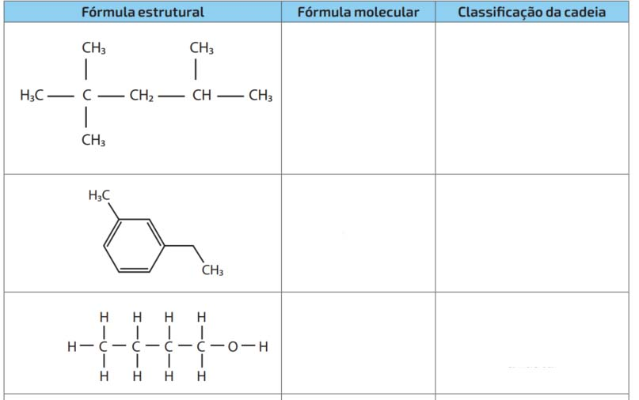
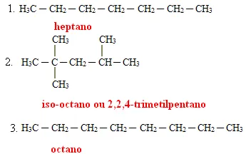

Química 2ª Série
Aula 01: Fundamentos de Química Orgânica
Jailson Duarte
28 março de 2022

- Dê a fórmula molecular e a classificação das seguintes cadeias carbônicas:
- 
Dê nome à substância: CH2= CH — CH3
A gasolina é obtida a partir do petróleo e, basicamente, pode ser considerada uma mistura de hidrocarbonetos. Três de seus componentes estão representados a seguir:
\[H_3C \;─ \;(CH_2)_5 \;─\; CH_3\]
\[H_3C \;─ \;C(CH_3)_2 \;─ \;CH_2 \;─ \;CH(CH_3)_2\]
\[H_3C \;─ \; (CH_2)_6 \;─ \; CH_3\]
Os nomes desses três compostos, respectivamente, são:
